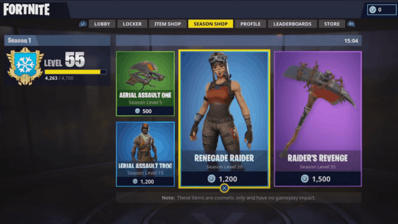

<html> </html>

<HEAD>
</HEAD>

<BODY>
    <p>Released in 2017, Renegade Raider is what many call the rarest Fortnite skin in history.
         She graced players with her presence in Chapter 1 – Season 1 as one of the first purchasable
          cosmetics. However, obtaining her back then was a bit more complicated than buying V-Bucks
           and using those to purchase the skin. Renegade Raider is a Rare Outfit in Fortnite, that
            could have been purchased in the Season Shop for 1,200 V-Bucks after reaching Level 20. 
            Renegade Raider was released in Season 1 and is part of the Storm Scavenger Set. Rare Fortnite skins are certainly not a new concept. In fact, since 2017, there have been many outfits, emotes and other cosmetics that have not resurfaced in the many years that Fortnite diehards would love to have a crack at again. Some that come to mind include the original Floss, Orange Justice and Hype emotes. While none of these have returned to the Item Shop, some skins, such as the Recon Expert, debuted in October of 2017 before going into the vault until May of 2020.

            Epic Games occasionally brings back age-old character outfits. Still, one white whale of a Fortnite skin eluded many and has become somewhat of a hot commodity over the last few years. Its name is the Renegade Raider, and it’s perhaps the most sought after and infamous Fortnite skin. Those who have it make it known and flaunt it whenever given a chance. The rest of us merely watch with a dramatic tear slowly rolling down our cheeks because it likely won’t ever come back to the Item Shop.
            
            You might be asking—what is Renegade Raider and what makes it so unique? Today, we are digging deep into this very topic and explaining the significance of Renegade Raider. </p>
            
